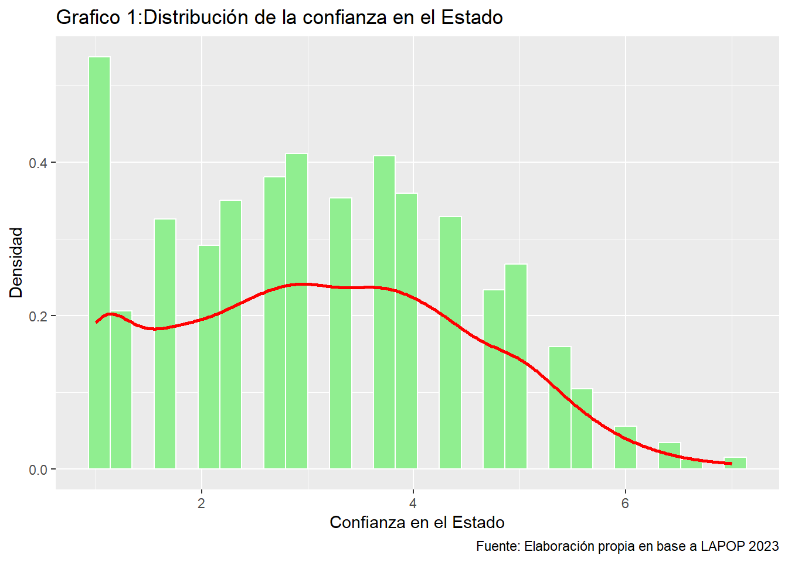
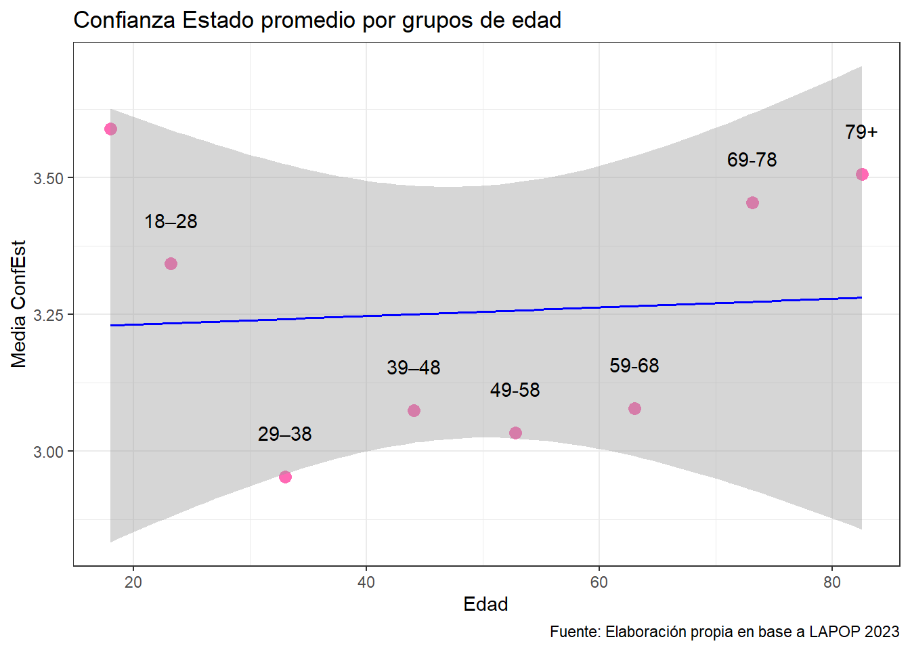
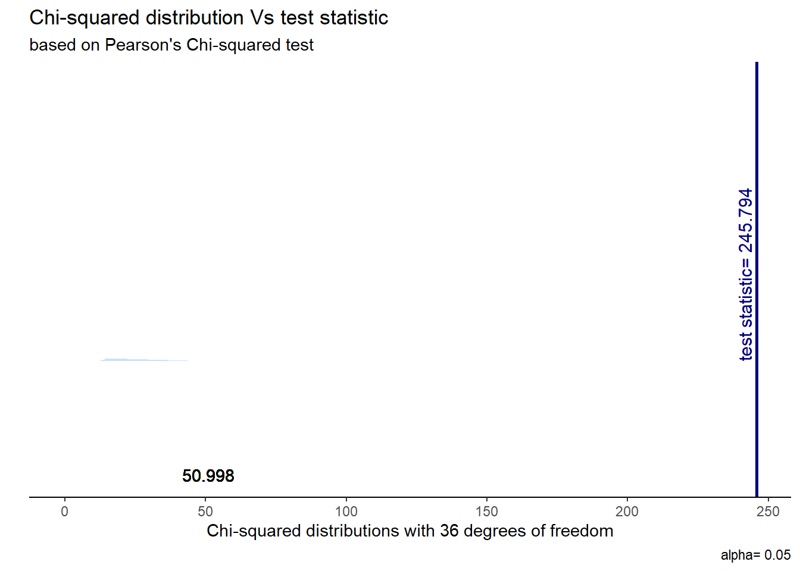

#| echo: false
options(scipen = 999)
library("pacman")
pacman::p_load(tidyverse,
summarytools,
sjmisc,
sjPlot,
haven,
readxl,
psych,
stargazer,
ktnir,
kableExtra,
table1,
janitor,
crosstable,
broom,
gginference,
sjstats,
rempsyc,
dplyr)
#Cargar base de datos --------------------------------------------------
dataLAPOP <- read_dta("input/CHL_2023_LAPOP_AmericasBarometer_v1.0_w.dta")
#Selección de variables ---------------------------------------------
data <- dataLAPOP %>%
select(b13, b21a, b31, b32, eff1, q2) %>%
na.omit() %>%
rename(
cCongreso = b13,
cPresid = b21a,
cCSup = b31,
cMuni = b32,
intPol = eff1,
edad = q2
)
#Variable Dependiente -------------------------------------------
data$confEstAlpha <- data %>%
select(cCSup, cPresid, cCongreso) #Crear indice Confianza en el Estado
data$confEst <- data %>%
select(cCSup, cPresid, cCongreso) %>% #Creamos variable del indice
rowMeans(na.rm = TRUE)
df_confEst <- data.frame(confEst = as.numeric(na.omit(data$confEst)))5 Análisis
5.1 Análisis descriptivo
Frente a la observación de los estadísticos del indice de confianza en el Estado, se pueden plantear ciertas conjeturas. Para empezar, es importante recordar que el indice promediado va de 1 a 7 en niveles de confianza (1: Muy poca confianza, 7: Mucha confianza).
Tomando esto en consideración, que la media asuma un valor de 3.13 implica que la confianza en el Estado es más baja que alta, lo que se refuerza con el resultado de la mediana (3).
Además de esto los cuartiles (Q1= 2, Q3= 4.25) confirman que el nivel de confianza en el Estado se encuentra acumulado en el nivel bajo.
Finalmente el valor de 1.4 de desviación estándar refleja una gran variabilidad en los valores asumidos por el indice, sin que se llegue a una polarización completa.
stargazer(
as.data.frame(df_confEst),
type = "text",
title = "Estadísticos Básicos de confianza Estado",
summary.stat = c("n","mean","sd","min","p25","median","p75","max")
)
Estadísticos Básicos de confianza Estado
===================================================================
Statistic N Mean St. Dev. Min Pctl(25) Median Pctl(75) Max
-------------------------------------------------------------------
confEst 1,574 3.133 1.401 1.000 2.000 3.000 4.250 7.000
-------------------------------------------------------------------En el histograma contiguo se percibe algo similar. Se observa que la distribución es asimétrica y sesgada a la izquierda (negativa), lo que sugiere que la mayoría de las personas tienden a tener menos confianza en el Estado. Respecto a la tendencia central, la mayoría de las observaciones se ubican en los puntos 0, 3 y 4, siendo cercanas al promedio (3.13) y mediana (3) lo que sugiere que existe una poca a mediana confianza en el Estado. Se observan gran cantidad de observaciones en el punto 0 y muy pocas en los puntos 6 y 7.
En general, se puede decir del histograma que existe una poca a mediana confianza en el Estado dentro de las observaciones.
#| echo: true
ggplot(data, aes(x = confEst)) +
geom_histogram(aes(y = ..density..), fill = "lightgreen", color = "white") +
geom_density(color = "red", size = 1) +
labs(title = "Grafico 1:Distribución de la confianza en el Estado",
x = "Confianza en el Estado",
y = "Densidad",
caption = "Fuente: Elaboración propia en base a LAPOP 2023")
Para finalizar el análisis descriptivo de la confianza en el Estado en Chile, se elaboró una comparación de promedios de confianza en el Estado según los distintos grupos etarios.
El gráfico nos muestra la relación entre la confianza en el Estado (confEst) y las edades en promedio presentadas en distintos grupos. A partir de esto y la línea de tendencia (línea azul), se observa que no existe una relación significativa entre la edad y la confianza en el Estado. Es decir, al aumentar la edad, la confianza (en promedio) se mantiene estadísticamente estable (posee una pendiente casi horizontal).
Al analizar los tramos de edad representados por los puntos, existe un comportamiento no lineal;
Edad (18-28): La confianza en promedio es más alta en comparación con los tramos intermedios, ubicándose el punto visiblemente por encima de la línea de tendencia.
Edad (28-68): Posee una disminución en la confianza en promedio, este rango etario se sutura por debajo de la media estimada, mostrando mayor desconfianza.
Edad (68-79+): La confianza vuelve a encontrarse sobre el promedio, superando la línea de tendencia, alcanzando niveles superiores al primer rango de edad.
Los grupos con mayor variabilidad aparente son los extremos etarios encuestados, lo que indica que, aunque el promedio es alto, podría haber diferencias significativas en los patrones de confianza dentro de estos rangos de edad. Por otro lado, la zona central (28-68) muestra una dispersión levemente más contenida pero consistentemente baja en confianza.
Además es inevitable considerar que al estar estudiando variables tipo escala Likert de tipo ordinal (1 a 7), donde el promedio es 3.25, los rangos de edad a pesar de estar con mayor valor en los extremos, siguen estando pegadas una de las otra. Por lo mismo no puede haber mayor diferencia entre las respuestas segun la edad del encuestado.
#| echo: true
## Grafico Edad - Confianza en el Estado ----------------
data$edad_cortes <- cut( #División de la edad de 10 en 10
data$edad,
breaks = c(18, 28, 38, 48, 58, 68, 78, 90),
labels = c("18–28", "29–38", "39–48",
"49-58", "59-68", "69-78", "79+"))
grafico1 <- data %>% #Creación objeto para hacer gráfico
group_by(edad_cortes) %>%
summarise(
mean_confEst = mean(confEst, na.rm = TRUE),
mean_edad = mean(edad, na.rm = TRUE)) %>%
ungroup()
ggplot(grafico1, aes(x = mean_edad, y = mean_confEst)) + #Gráfico edad-confEst
geom_point(size = 3, color = "hotpink") +
geom_smooth(method = "lm", color = "blue", size = 0.7) +
geom_text(aes(label = edad_cortes), nudge_y = 0.08) +
labs(
title = "Confianza Estado promedio por grupos de edad",
x = "Edad",
y = "Media ConfEst" ,
caption = "Fuente: Elaboración propia en base a LAPOP 2023") +
theme_bw()
Por otro lado, respecto a la relación entre la variable de “A los políticos les importa mi opinion/interes” y la variable “Confianza en la Municipalidad” se observa una alta tasa de centralización en las opiniones de ambas variables. Sin embargo, se puede notar que se encuentran más concentrados los datos en la intersección de “En desacuerdo” que en la de “De acuerdo” lo que indica que existen más personas que no estan alineadas con los políticos y que no confian en las Municipalidades que quienes si lo estan y si confian.
#| echo: true
data$intPol_3cat <- case_when(
data$intPol %in% 1:2 ~ "En desacuerdo",
data$intPol %in% 3:5 ~ "Ni acuerdo ni desacuerdo",
data$intPol %in% 6:7 ~ "De acuerdo")
data$cMuni_3cat <- case_when(
data$cMuni %in% 1:2 ~ "En desacuerdo",
data$cMuni %in% 3:5 ~ "Ni acuerdo ni desacuerdo",
data$cMuni %in% 6:7 ~ "De acuerdo")
##Gráfico de relación entre intPol y cMuni
label(data$intPol_3cat) = "A los politicos les importa mi opinion/intereses"
label(data$cMuni_3cat) = "Confio en mi Municipalidad"
sjPlot::sjt.xtab(var.row = data$intPol_3cat,
var.col = data$cMuni_3cat,
show.summary = F,
emph.total = T,
show.row.prc = T,
show.col.prc = T)| A los politicos les importa mi opinion/intereses |
Confio en mi Municipalidad |
Total | ||
| De acuerdo | En desacuerdo | Ni acuerdo ni desacuerdo |
||
| De acuerdo | 66 37.9 % 23.7 % |
24 13.8 % 7.5 % |
84 48.3 % 8.6 % |
174 100 % 11.1 % |
| En desacuerdo | 85 13.3 % 30.5 % |
200 31.3 % 62.9 % |
354 55.4 % 36.2 % |
639 100 % 40.6 % |
| Ni acuerdo ni desacuerdo |
128 16.8 % 45.9 % |
94 12.4 % 29.6 % |
539 70.8 % 55.2 % |
761 100 % 48.3 % |
| Total | 279 17.7 % 100 % |
318 20.2 % 100 % |
977 62.1 % 100 % |
1574 100 % 100 % |
5.2 Análisis Estadístico Bivariado
En relación a las hipótesis planteadas en la introducción, se elaboraron distintas pruebas estadísticas de correlación para poder rechazar sus hipotesis nulas, y con eso, obtener indicios que apoyen las hipotesis alternativas.
Para la hipotesis nula 1: No existe una relación entre la edad y la confianza en el Estado. Se implemento una prueba de correlación de tipo Pearson debido a que las dos variables son de tipo continuas. Frente a los resultados ( Coeficiente (\(r\)): -0.003, Valor p = 0.8831) no se pudo rechazar la hipotesis nula, es decir, no se puede confirmar de que exista una correlación entre la edad y la confianza en el Estado en Chile. Según los criterios de Cohen(1988) seria una correlación muy pequeña y negativa.
Pearson's product-moment correlation
data: data$edad and data$confEst
t = -0.14701, df = 1572, p-value = 0.8831
alternative hypothesis: true correlation is not equal to 0
95 percent confidence interval:
-0.05310716 0.04570952
sample estimates:
cor
-0.003707872 Para la hipotesis nula 2: No Existe una relación entre la percepción de los intereses de los políticos por la opinion pública y la confianza en el Estado. Se empleó el coeficiente de correlación de Pearson debido a la naturaleza de las variables, en tanto la percepción de interés político es ordinal y el nivel de confianza es numérico. El coeficiente da cuenta de una relación positiva y grande, siguiendo los criterios de Cohen (1988) (r = 0.512). Es decir, es probable que a medida que aumentan la confianza en las municipalidades, las personas también aumentan sus niveles de confianza. La relación es estadísticamente significativa (p < 0.001), por ende es posible rechazar H0 sobre no asociación entre variables, entregando evidencia a favor de una relación entre ambas variables con un 99.9% de confianza.
Pearson's product-moment correlation
data: data$intPol and data$confEst
t = 21.491, df = 1572, p-value < 0.00000000000000022
alternative hypothesis: true correlation is not equal to 0
95 percent confidence interval:
0.4374214 0.5138420
sample estimates:
cor
0.4765314 Para la hipotesis nula 3: No existe una relación entre la confianza en el Estado y la confianza en los organismos municipales. Se implemento una prueba de correlación de tipo Pearson debido a que una de las variables es de tipo continua y la otra ordinal. Frente a los resultados ( Coeficiente (\(r\)): 0,512, Valor p < 0.00005) se pudo rechazar la hipotesis nula, es decir, existen indicios de que exista una correlación entre la confianza en las Municipalidades y la confianza en el Estado en Chile. Según los criterios de Cohen(1988) seria una correlación grande y positiva.
Pearson's product-moment correlation
data: data$cMuni and data$confEst
t = 23.658, df = 1572, p-value < 0.00000000000000022
alternative hypothesis: true correlation is not equal to 0
95 percent confidence interval:
0.4750163 0.5479361
sample estimates:
cor
0.5123993 Por ultimo, la hipotesis nula 4: No existe una relación entre la percepción de los intereses de los políticos por la opinion pública y la confianza en las municipalidades . Se implemento una prueba de correlación de tipo chi2, debido a que ambas variables son de tipo ordinal. De acuerdo a un Chi crítico de 50,998 para un α=0.05, de acuerdo a 36 grados de libertad y con un p < 0.00000000022, se obtiene un Chi estimado de 245.79, por lo que se puede rechazada la hipótesis nula, lo que significa que existe una correlación estadísticamente probable entre la percepción en el interés del gobierno por la opinión pública y la confianza de los ciudadanos en las municipalidades. Según los criterios de Cohen(1988), con una V de Cramer de 0.16, se trata de una correlación pequeña.
statistic | p | parameter | Method |
|---|---|---|---|
245.79 | < .001*** | 36 | Pearson's Chi-squared test |
X-squared
0.1613272 